Referans Haritamız
Türkiye'nin Lider Markaları Bizi Seçti
Gıda, madencilik, savunma ve demir-çelik sektörlerinde yüzlerce projeyi başarıyla devreye aldık.
Haritadaki yerini görmek için bir logonun üzerine tıklayın.
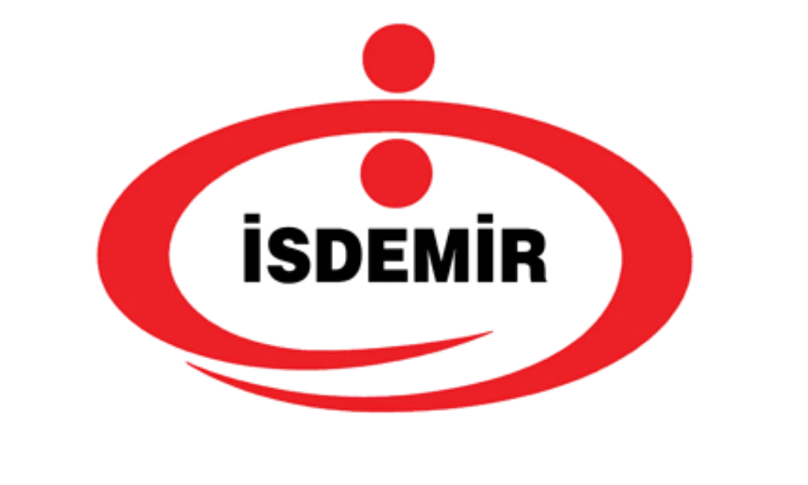
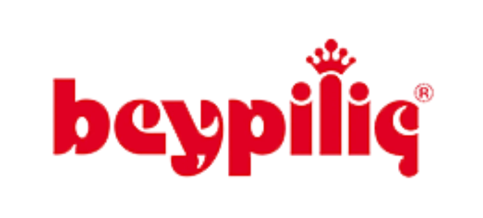
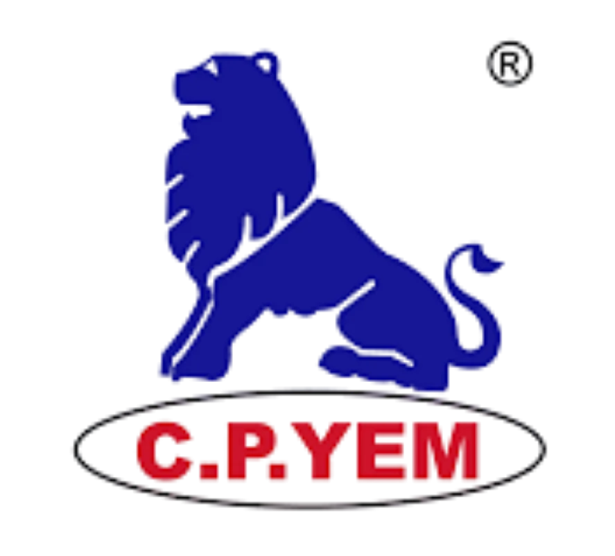
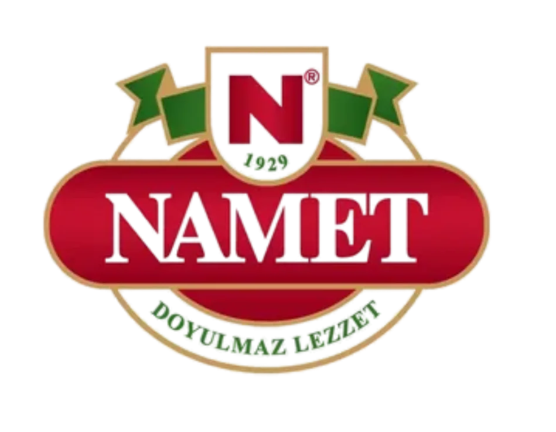
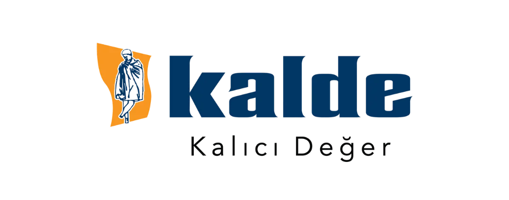
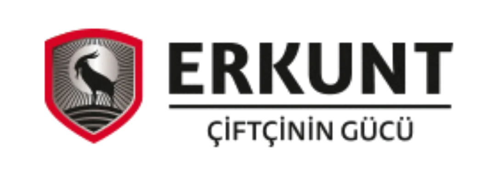
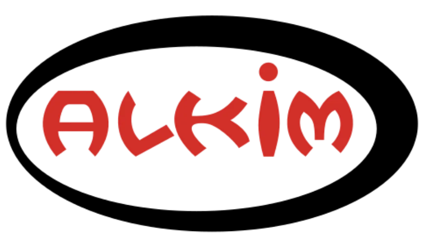
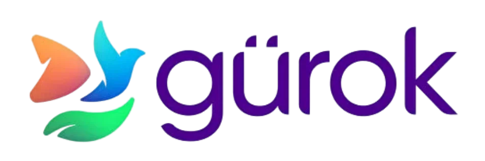
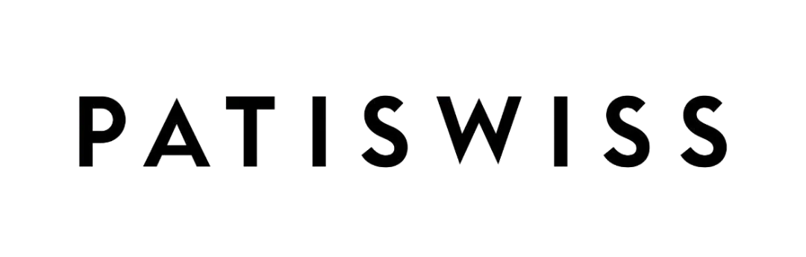
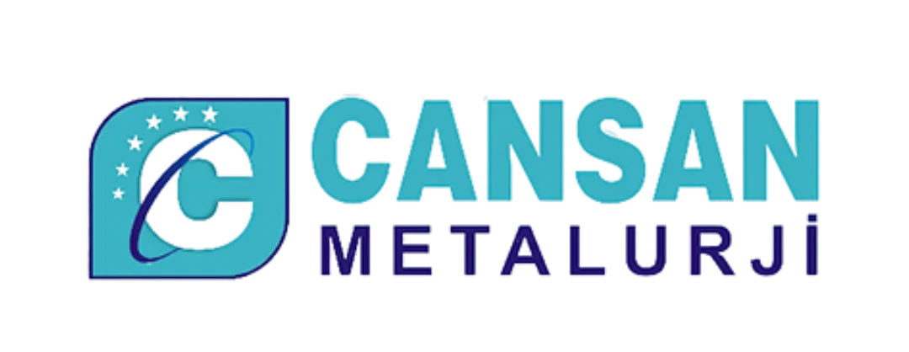
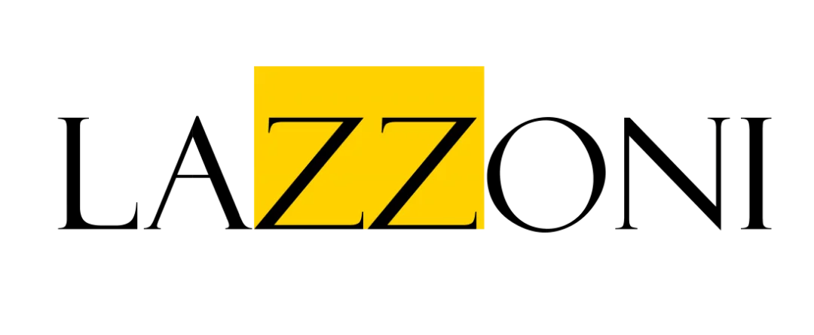
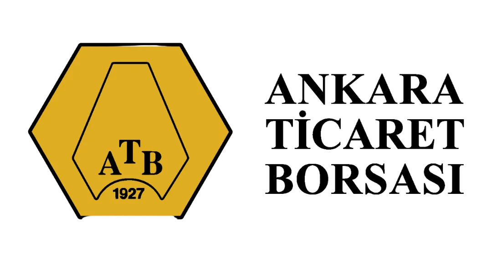
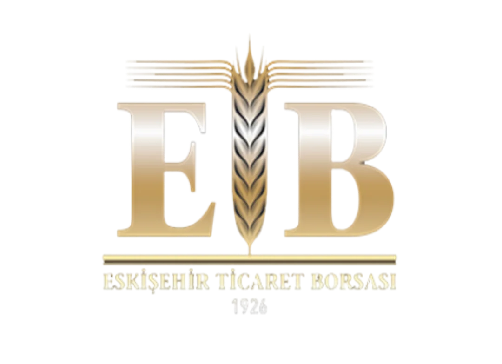
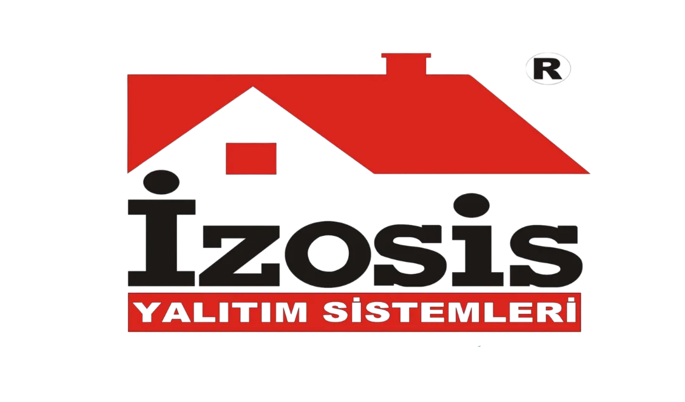
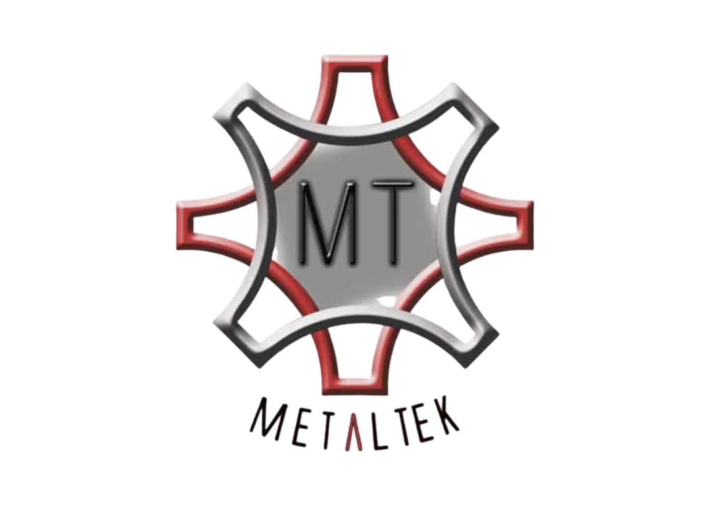
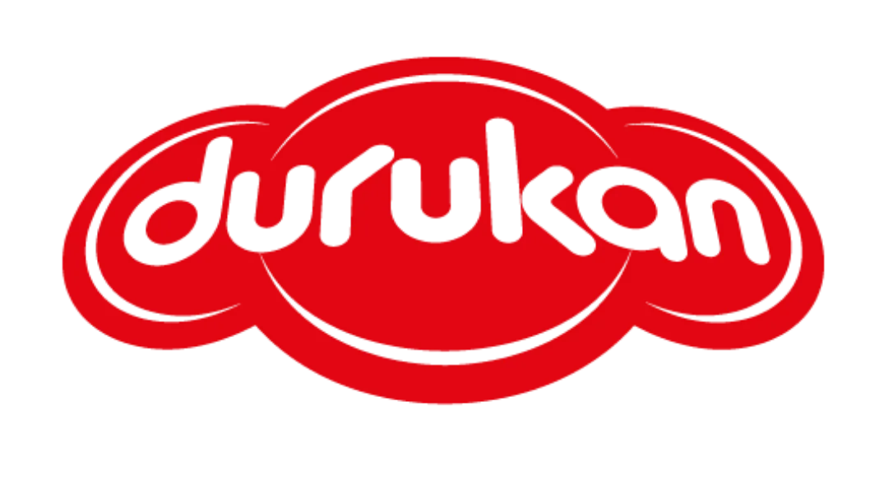
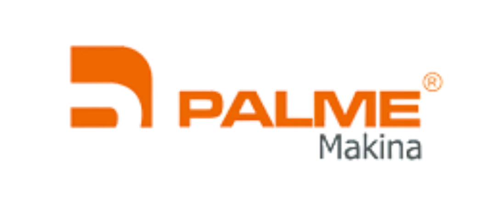
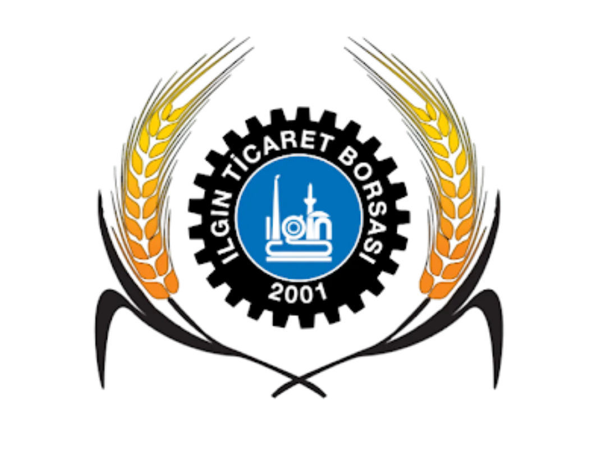
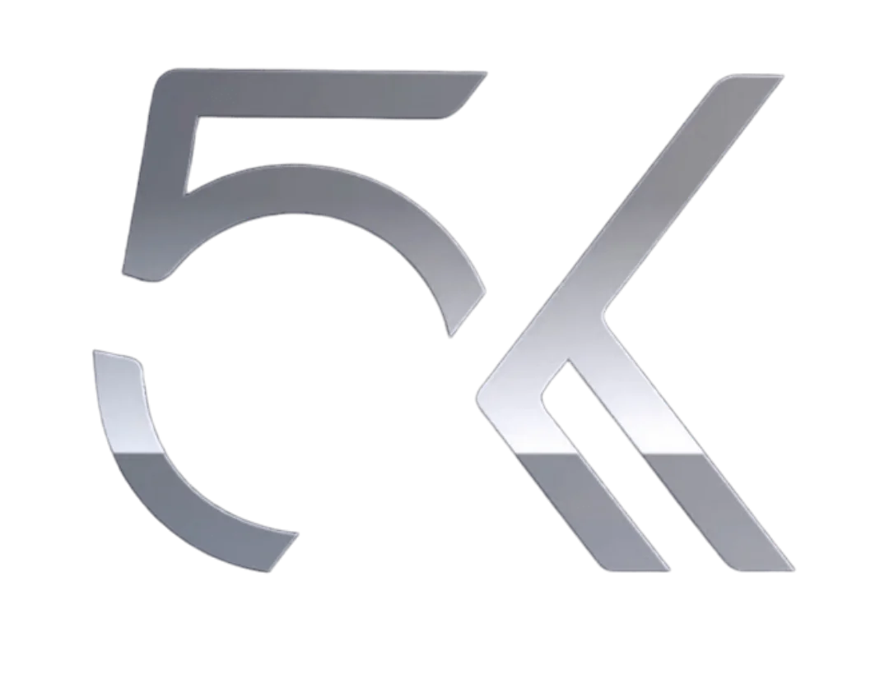